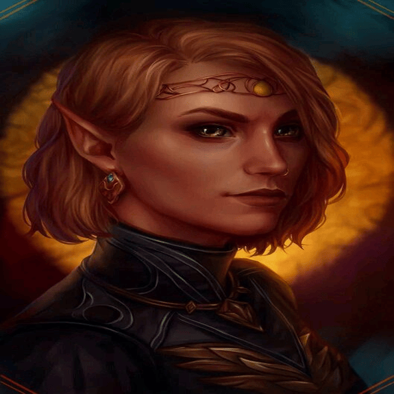
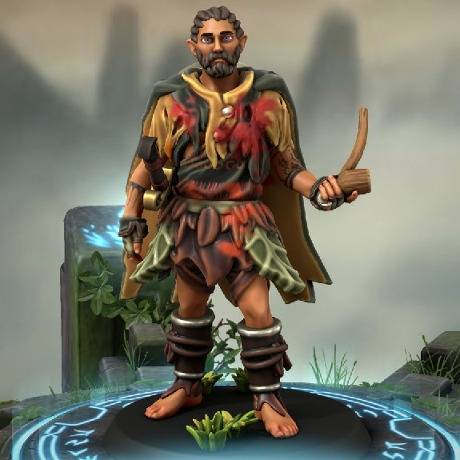
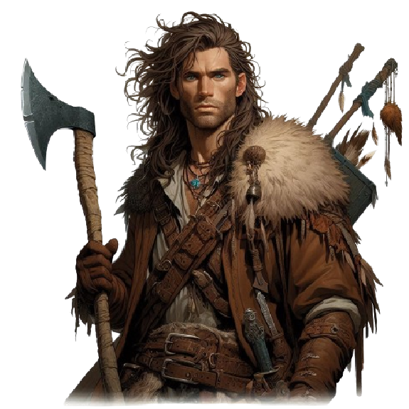

-
Irmã Garaele
Enquanto Farna Liadon, Horion Shadowmoon, Nistrak krusk ou Sildar Halwinter estiver em campo, este card pode atacar duas vezes por turno. Uma vez por turno, quando este card destruir um monstro em batalha e o envia-lo para o cemitério, ganhe pontos de vida igual metade do ataque original do monstro destruído.
ATK/ 4200 DEF/ 3500 -
Sildar Halwinter

Não se engane por sua idade avançada, esse experiente guerreiro é capaz de derrotar diversos inimigos apenas com o balançar de sua espada. Ninguém que realmente viu o alcance de seu poder foi capaz de sobreviver para contar história.
ATK/ 3800 DEF/ 2600 -
Sildar Capturado

Este card não pode ser invocado por invocação especial. Quando este card for invocado por invocação normal, enquanto "Farna Liadon", "Horion Shadowmoon" ou "Nistrak Krus" estiver em campo, você pode enviar este card para o cemitério e invocar, por invocação especial da sua mão, deck ou cemitério, um "Sildar Halwinter" em modo de ataque.
ATK/ 1900 DEF/ 1200 -
Jorge, o meio-elfo
Enquanto este card estiver em campo, seu nome se torna "Horion Shadowmoon". Uma vez por turno, você poe mandar este card para o cemitério e invocar epecial um mostro tipo besta level 4 ou inferior,do seu deck ou mão, para substituir este card. Enquanto este card estiver no cemitério, quando um monstro tipo besta for destruido por resultado de batalha ou efeito de card e enviado ao cemitério, você pode invocar este card por invocação especial.
ATK/ 1600 DEF/ 1200 -
Farna Liadon

Uma vez por turno, enquanto "Horizon Shadowmoon" estiver no campo, este card pode atacar os pontos de vida do oponente diretamente. Caso você tenha sofrido dano por efeito do Card "Edlir, O Mago Safado", este card dobra os pontos de vida e imediatamente ataca diretamente os pontos de vida do oponente.
ATK/ 1600 DEF/ 1200 -
Nistrak Krusk
Quando este card for invocado por invocação normal ou especial, da mão, deck ou cemitério, você pode escolher um card de campo do seu deck ou cemitério para sua mão. Uma vez por turno, você pode escolher um card tipo besta, besta-guerreira ou besta-alada que o inimigo controla e destruí-lo.
ATK/ 1700 DEF/ 1900 -
Vândor Halaz

Este card não pode ser invocado por invocação normal ou especial. Este card só pode ser invocado da sua mão, deck ou cemitério quando "Farna Liadon", "Horion Shadowmoon" e "Nistrak Krusk" são destruídos e enviados para o cemitério. Quando este card é invocado, você pode invocar os monstros que listados neste card do cemitério em modo de ataque. Seus monstros não podem ser destruidos em batalha enquanto Vândor estiver em campo. Quando este card for enviado para o cemitério, destrua todos os monstros que você controla.
ATK/ 4500 DEF/ 4200